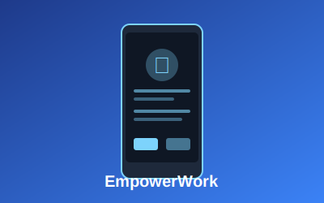

EmpowerWork
Aplicación móvil de gestión empresarial desarrollada como proyecto final de mi FP DAM. Sistema completo que permite a administradores gestionar empleados, aprobar vacaciones y permisos. Los empleados pueden fichar entrada/salida, solicitar permisos y consultar su historial de fichajes. Desarrollada en Java con Android Studio.
p>